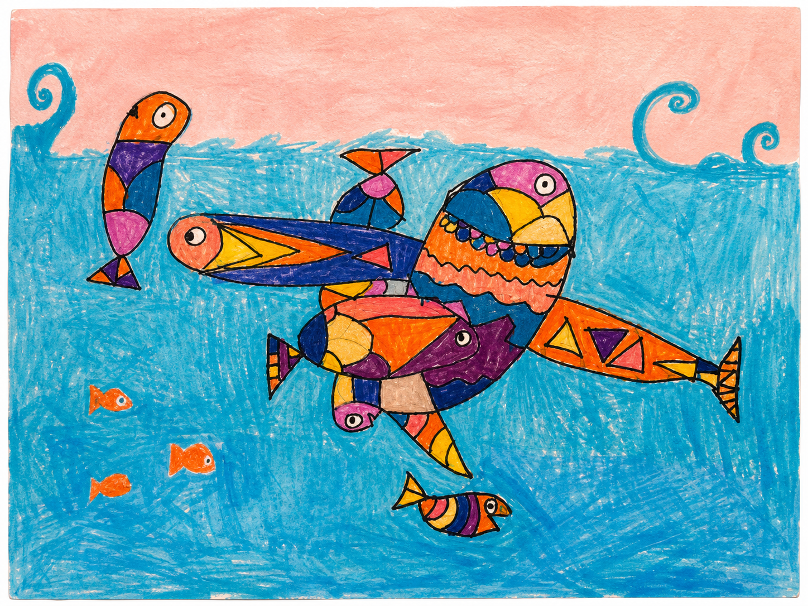
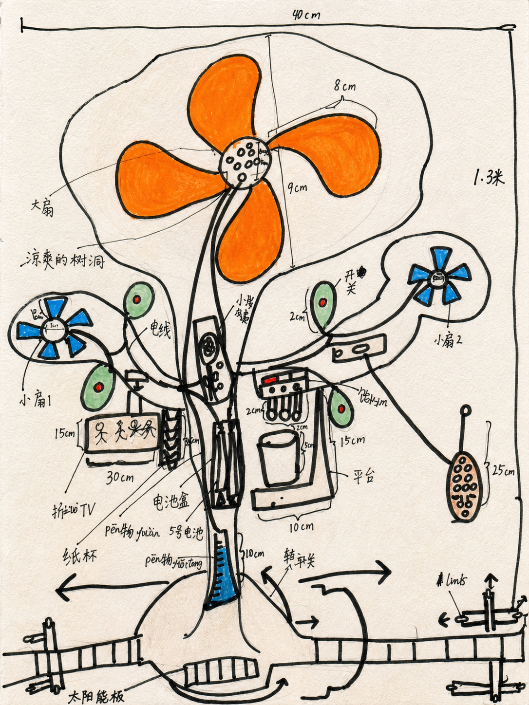
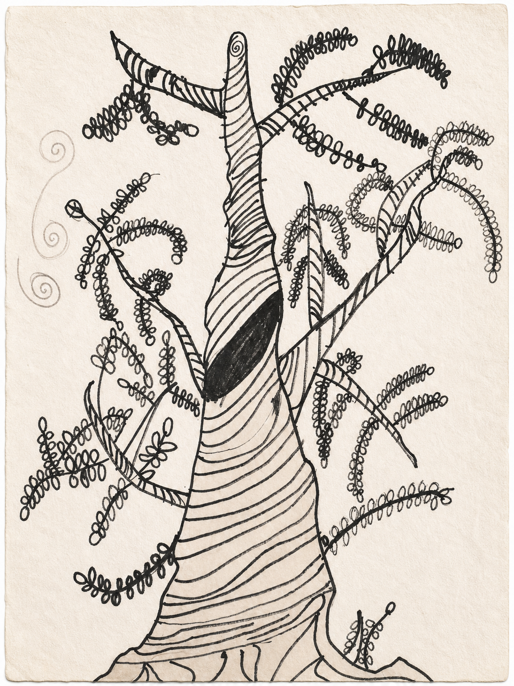
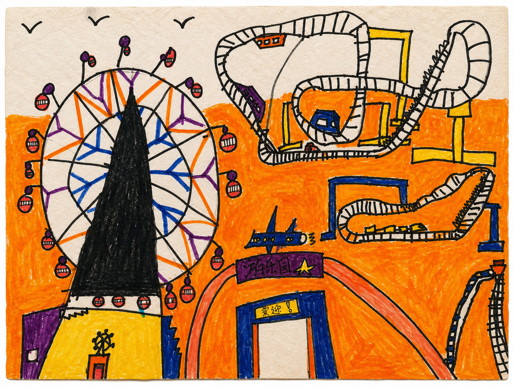

会观察
从树干纹理到高楼线条，从游乐场设施到荣宝斋调研，作品里有持续观看后的整理。
儿童绘画作品集 线上小展
这里收藏了小润画下的城市、校园、树、鱼和小发明。每一幅作品都像一张观察世界的手稿，也像一封寄给想象力的短笺。




gallery index
每张作品都保留原始照片质感，并配有面向观众的文字说明。打开作品，可以看到更完整的画面解读。
这一类暂时没有作品。
curator memo
这组作品最可贵的地方，是它们没有只停留在“画得像”。陈小润会把看到的事物拆开：形状、功能、方向、结构、故事和情绪，都被放进画面里。
从树干纹理到高楼线条，从游乐场设施到荣宝斋调研，作品里有持续观看后的整理。
未来电风扇和放学通道指示牌显示出清晰的功能意识，画面像儿童版产品方案。
云纹、鱼群、过山车、奔跑的小人，让静止的纸面有了方向感和速度感。